Quick Start¶
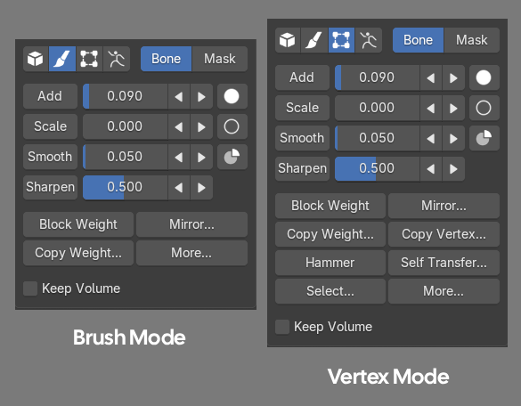
General Tools¶
Weight Operation Sliders¶
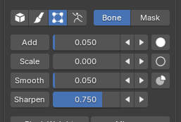
Add Weight
- Increases weight strength.
- Range: 0.001 – 1.0
Scale Weight
- Decreases weight by multiplying it (lower = reduces more, higher = reduces less).
- Range: 0.0 – 0.999
Smooth Weight
- Blends weights smoothly.
- Range: 0.001 – 1.0 (can go up to 100)
Sharpen Weight
- Sharpens weight edges.
- Range: 0.001 – 1.0
Note
If no vertices are selected, flooding will apply to the entire mesh.
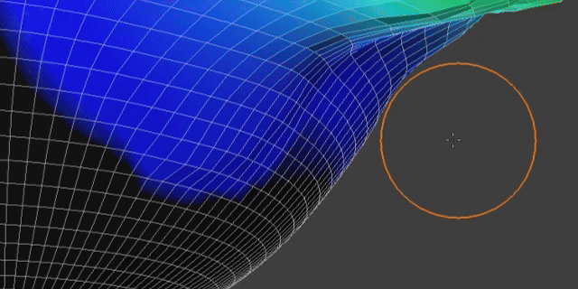
Block Weight¶
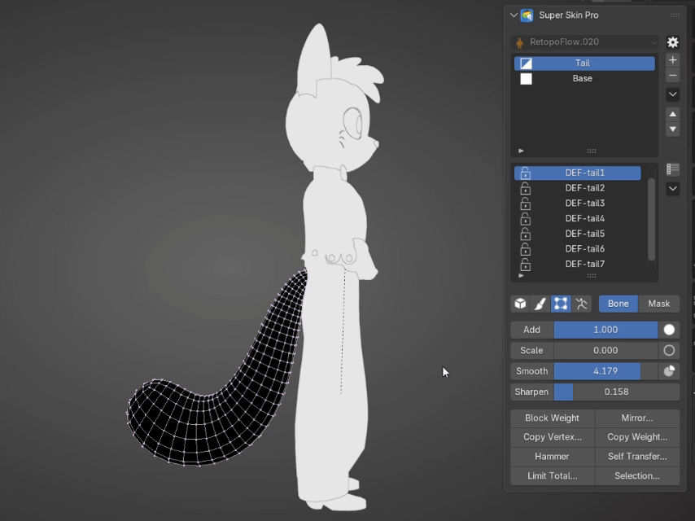
Automatically calculates weights from the selected bones as follows:
- Select the bones you want to auto-assign.
- Click the Block Weight button.
Bone Locks
Block Weight pulls weight from Bones that are not Locked, so check your Bone Locks carefully for a correct Block Weight result.
Face Rings
When this option is checked, Block Weight follows the mesh's edge loops more closely. Watch the Face Rings example.
Mirror Weight¶
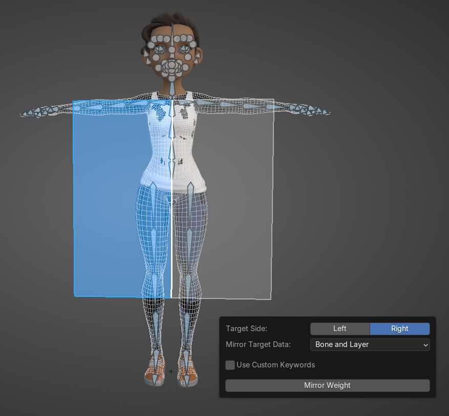
- Target Side: Specifies the target side for mirroring (can be identified via the viewport HUD—the blue plane indicates the target side).
- Mirror Target Data: Sets whether to mirror only the Layer Mask or the Bone Weight (both by default).
- Use Custom Mapping Keywords (Optional): Allows you to add custom left and right side keywords for rigs with non-standard naming conventions. For most general users, there is no need to configure this setting.
Multiple Layers
You can select multiple layers to apply mirror weights across all of them.
Selected Vertices
If you have selected vertices while mirroring, the mirror will only apply to the selected vertices.
Copy Weight¶
Copy weights from the active vertex group to the clipboard.
Steps:
- Copy or Cut: Copy or cut the weights from the current vertex group.
- Paste: Select the target bone or layer mask, then paste the weights (choose between Add, Replace, or Subtract).
Note
You can copy and paste across bone and mask modes.
Multi-Color Preview¶
While in Bone Mode, press Alt + 3 to toggle Multi-Color Preview.
Note
Multi-Color mode may impact performance.
Keep Volume¶
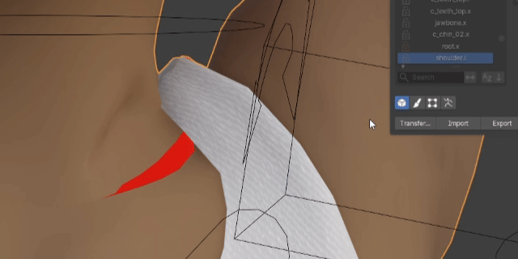
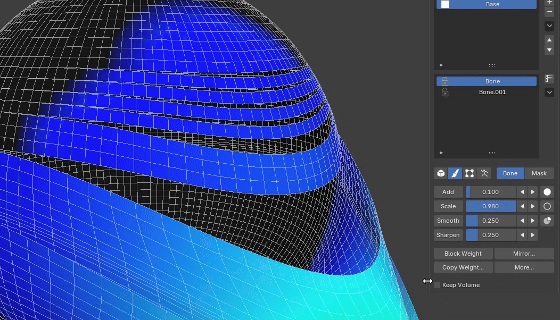
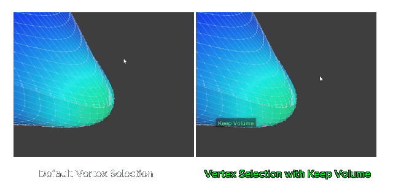
Brush Mode Tools¶
Brush Shortcut¶
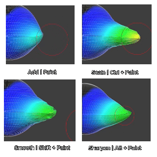
Brush Options¶
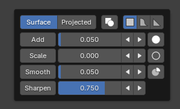
Brush Falloff¶
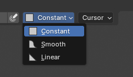
Connected Only Option for Brush¶
Check the "Connected Only" option to limit weight painting to connected surface parts only.
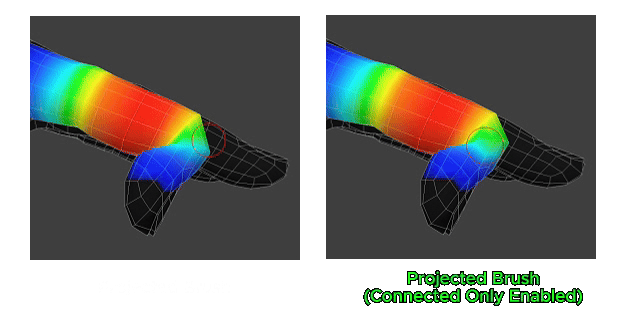
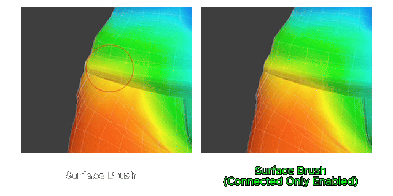
Vertex Mode Tools¶
Vertex Paint Weight Gesture¶
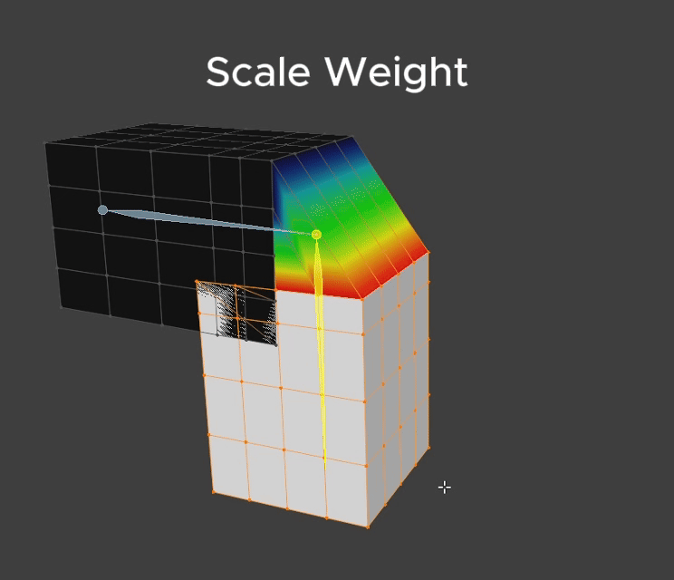
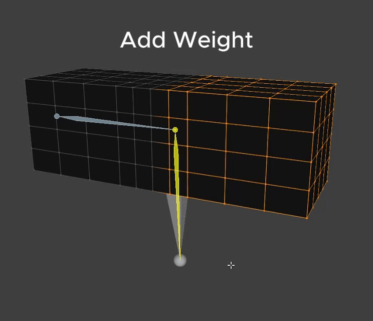
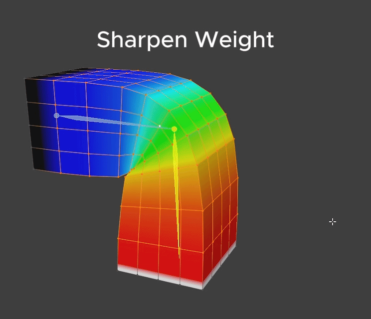
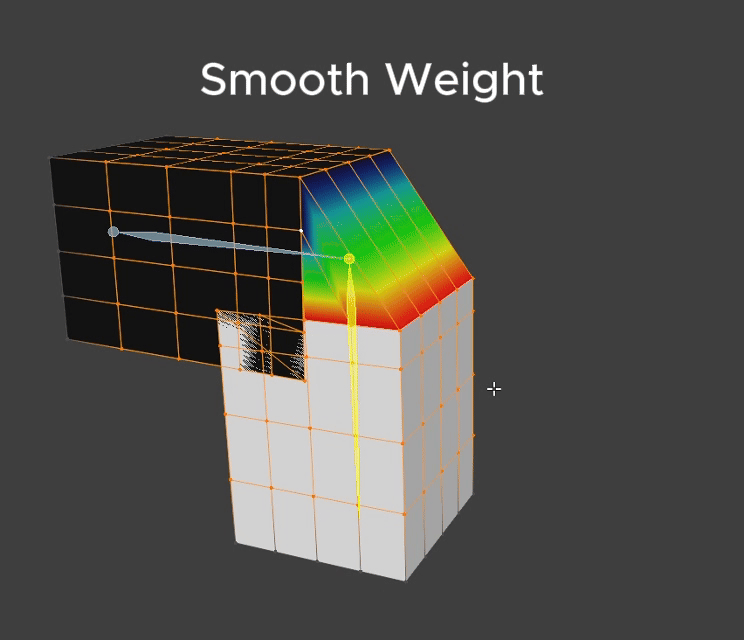
Note
If no vertices are selected, this will apply to the entire mesh.
Vertex Options¶
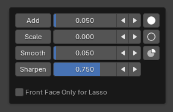
Self Transfer¶

Transfers weight from a Vertex within the same Mesh , as follows:
- Select the Vertex to use as the Source, press Self Transfer..., then press Mark Source in the popup
- Select the target Vertex (Target), press Self Transfer... again, then press Transfer in the popup
Transfer Target
The transfer operation affects both bone and mask data of the active layer.
Copy Vertex Weight¶
Copy the weight values of a selected vertex to the clipboard.
Steps:
- Select a single vertex, then click Copy Vertex to copy its weight data to the clipboard.
- Select the target vertices, then click Paste Vertex to apply the weights.
Note
You can copy and paste across bone and mask modes.
Hammer Weight¶
Click the Hammer button to hammer selected vertices to average their weights.
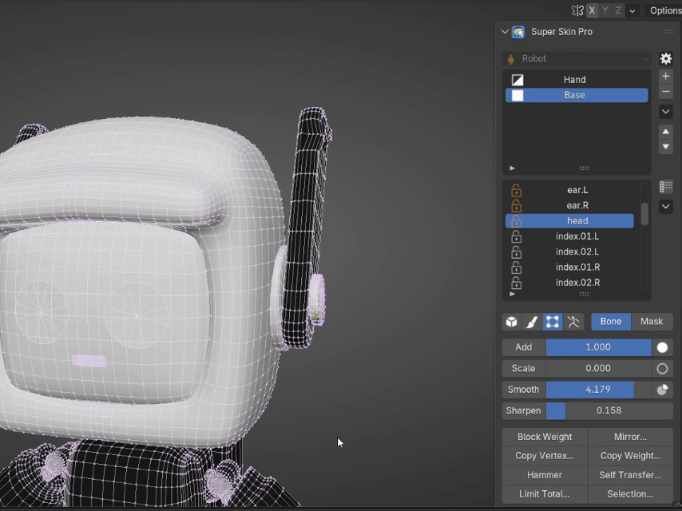